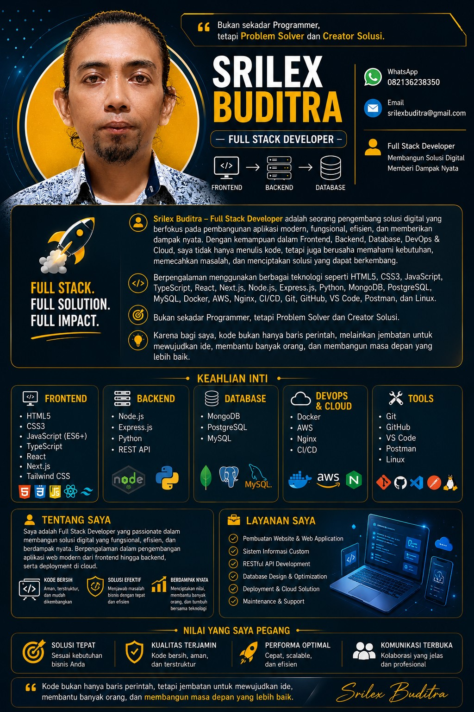
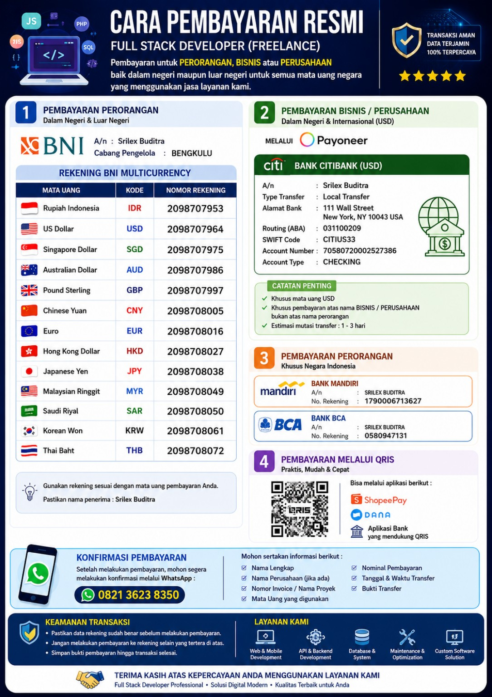

Frontend
HTML5 · CSS3 · JavaScript · TypeScript · React · Next.js · Tailwind CSS
FULL STACK DEVELOPER • FREELANCE
Membangun aplikasi digital modern, fungsional, efisien, aman, dan siap berkembang — dari frontend sampai backend, database, deployment, dan cloud.

TENTANG SAYA
Srilex Buditra – Full Stack Developer berfokus pada pembangunan aplikasi modern, fungsional, efisien, dan memberikan dampak nyata.
Berpengalaman dengan frontend, backend, database, DevOps & cloud. Pendekatan saya dimulai dari memahami kebutuhan, memecahkan masalah, lalu membangun solusi yang dapat berkembang.
KEAHLIAN INTI
HTML5 · CSS3 · JavaScript · TypeScript · React · Next.js · Tailwind CSS
Node.js · Express.js · Python · REST API
MongoDB · PostgreSQL · MySQL
Docker · AWS · Nginx · CI/CD
Git · GitHub · VS Code · Postman · Linux
LAYANAN
Website bisnis, company profile, dashboard, portal, dan aplikasi web responsif.
Sistem yang dirancang mengikuti alur kerja dan kebutuhan bisnis.
API terstruktur untuk menghubungkan frontend, aplikasi, dan layanan eksternal.
Perancangan database, query, struktur data, dan peningkatan performa.
Deployment server, Docker, Nginx, cloud, serta pipeline CI/CD.
Perbaikan bug, pemeliharaan, optimasi, dan pengembangan lanjutan.
PEMBAYARAN
Untuk perorangan, bisnis, dan perusahaan dalam negeri maupun internasional.

Setelah transfer, kirimkan bukti pembayaran beserta nama pengirim, nominal, tanggal/waktu transfer, mata uang, dan nama proyek/invoice.
Konfirmasi via WhatsAppSelalu verifikasi detail rekening sebelum melakukan pembayaran.
KONTAK
Ceritakan kebutuhan Anda. Kita bisa mulai dari konsultasi singkat sampai perencanaan dan pengembangan solusi.